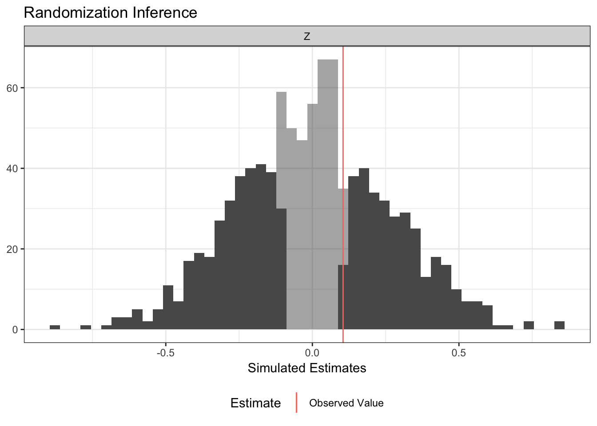

ri2 makes conducting randomization inference easy. The development of ri2 is supported by a Standards Grant from EGAP. ri2 is the successor package to ri.
If you’d like to install the most current development release, use the following code:
install.packages("devtools")
devtools::install_github("acoppock/ri2")Here is the basic syntax for a two-arm trial
library(ri2)
N <- 100
declaration <- randomizr::declare_ra(N = N, m = 50)
Z <- randomizr::conduct_ra(declaration)
X <- rnorm(N)
Y <- .9 * X + .2 * Z + rnorm(N)
W <- runif(N)
df <- data.frame(Y, X, Z, W)
ri_out <-
conduct_ri(
formula = Y ~ Z,
declaration = declaration,
assignment = "Z",
sharp_hypothesis = 0,
data = df
)
plot(ri_out)
summary(ri_out)
#> estimate
#> 0.3208074
#> p_value
#> 0.2160000
#> 2.5th Percentile of Null Distribution
#> -0.4913923
#> 97.5th Percentile of Null Distribution
#> 0.5085006